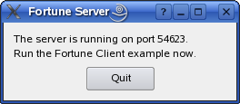

Fortune Server Example
This example is intended to be run alongside the Fortune Client example or the Blocking Fortune Client Example.

It uses QTcpServer to accept incoming TCP connections, and a simple QDataStream based data transfer protocol to write a fortune to the connecting client (from the Fortune Client example), before closing the connection.
class Server : public QDialog { Q_OBJECT public: explicit Server(QWidget *parent = Q_NULLPTR); private slots: void sessionOpened(); void sendFortune(); private: QLabel *statusLabel; QTcpServer *tcpServer; QStringList fortunes; QNetworkSession *networkSession; };
The server is implemented using a simple class with only one slot, for handling incoming connections.
tcpServer = new QTcpServer(this);
if (!tcpServer->listen()) {
QMessageBox::critical(this, tr("Fortune Server"),
tr("Unable to start the server: %1.")
.arg(tcpServer->errorString()));
close();
return;
}
QString ipAddress;
QList<QHostAddress> ipAddressesList = QNetworkInterface::allAddresses();
// use the first non-localhost IPv4 address
for (int i = 0; i < ipAddressesList.size(); ++i) {
if (ipAddressesList.at(i) != QHostAddress::LocalHost &&
ipAddressesList.at(i).toIPv4Address()) {
ipAddress = ipAddressesList.at(i).toString();
break;
}
}
// if we did not find one, use IPv4 localhost
if (ipAddress.isEmpty())
ipAddress = QHostAddress(QHostAddress::LocalHost).toString();
statusLabel->setText(tr("The server is running on\n\nIP: %1\nport: %2\n\n"
"Run the Fortune Client example now.")
.arg(ipAddress).arg(tcpServer->serverPort()));
In its constructor, our Server object calls QTcpServer::listen() to set up a QTcpServer to listen on all addresses, on an arbitrary port. In then displays the port QTcpServer picked in a label, so that user knows which port the fortune client should connect to.
fortunes << tr("You've been leading a dog's life. Stay off the furniture.")
<< tr("You've got to think about tomorrow.")
<< tr("You will be surprised by a loud noise.")
<< tr("You will feel hungry again in another hour.")
<< tr("You might have mail.")
<< tr("You cannot kill time without injuring eternity.")
<< tr("Computers are not intelligent. They only think they are.");
Our server generates a list of random fortunes that it can send to connecting clients.
connect(tcpServer, &QTcpServer::newConnection, this, &Server::sendFortune);
When a client connects to our server, QTcpServer will emit QTcpServer::newConnection(). In turn, this will invoke our sendFortune() slot:
void Server::sendFortune() { QByteArray block; QDataStream out(&block, QIODevice::WriteOnly); out.setVersion(QDataStream::Qt_4_0);
The purpose of this slot is to select a random line from our list of fortunes, encode it into a QByteArray using QDataStream, and then write it to the connecting socket. This is a common way to transfer binary data using QTcpSocket. First we create a QByteArray and a QDataStream object, passing the bytearray to QDataStream's constructor. We then explicitly set the protocol version of QDataStream to QDataStream::Qt_4_0 to ensure that we can communicate with clients from future versions of Qt. (See QDataStream::setVersion().)
out << (quint16)0;
out << fortunes.at(qrand() % fortunes.size());
out.device()->seek(0);
out << (quint16)(block.size() - sizeof(quint16));
At the start of our QByteArray, we reserve space for a 16 bit integer that will contain the total size of the data block we are sending. We continue by streaming in a random fortune. Then we seek back to the beginning of the QByteArray, and overwrite the reserved 16 bit integer value with the total size of the array. By doing this, we provide a way for clients to verify how much data they can expect before reading the whole packet.
QTcpSocket *clientConnection = tcpServer->nextPendingConnection();
connect(clientConnection, &QAbstractSocket::disconnected,
clientConnection, &QObject::deleteLater);
We then call QTcpServer::nextPendingConnection(), which returns the QTcpSocket representing the server side of the connection. By connecting QTcpSocket::disconnected() to QObject::deleteLater(), we ensure that the socket will be deleted after disconnecting.
clientConnection->write(block);
clientConnection->disconnectFromHost();
}
The encoded fortune is written using QTcpSocket::write(), and we finally call QTcpSocket::disconnectFromHost(), which will close the connection after QTcpSocket has finished writing the fortune to the network. Because QTcpSocket works asynchronously, the data will be written after this function returns, and control goes back to Qt's event loop. The socket will then close, which in turn will cause QObject::deleteLater() to delete it.
Files:
See also Fortune Client Example and Threaded Fortune Server Example.